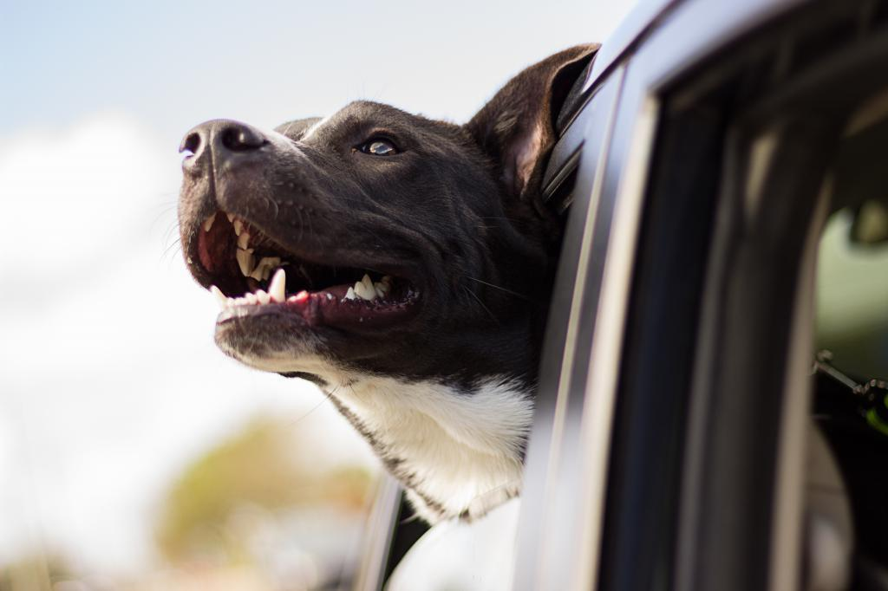
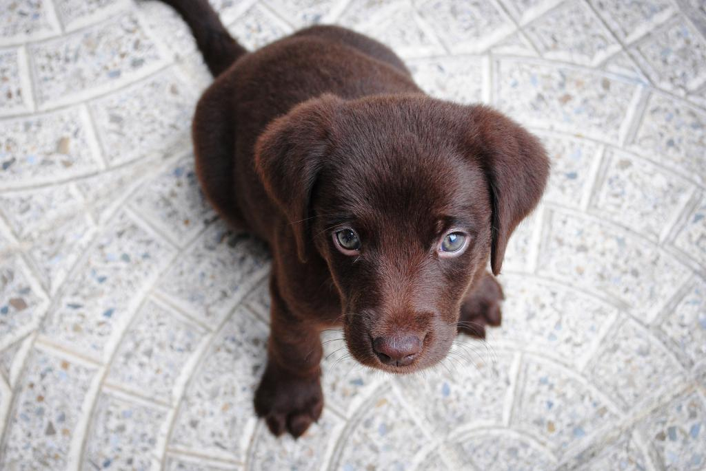
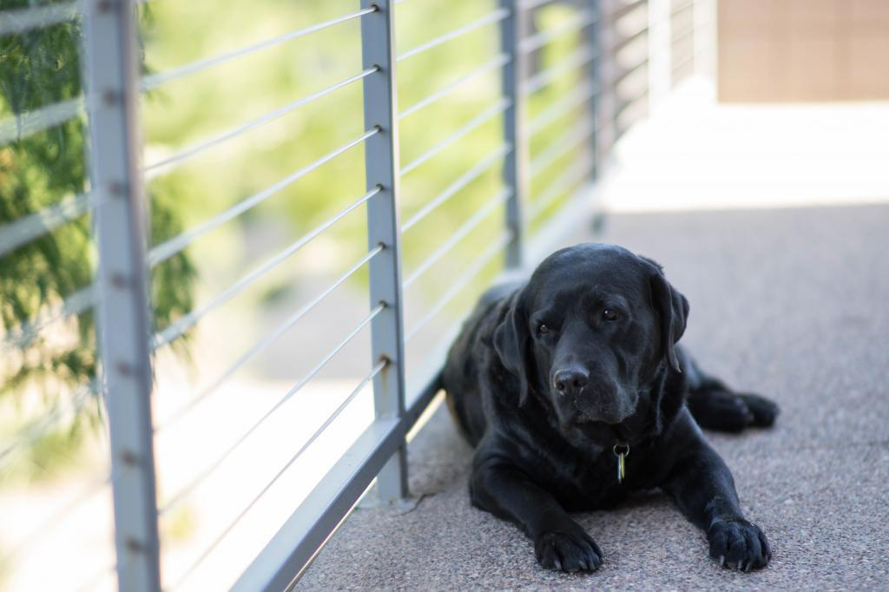
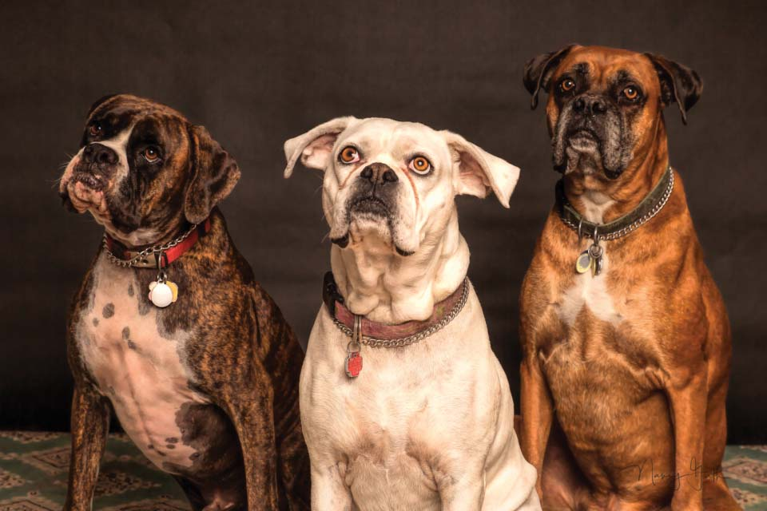

It’s easy to find a dog or cat who’s right for you at a shelter or rescue group.
Once you find a pet, get contact info for their shelter or rescue. Contact them to learn more about how to meet and adopt the pet.
The rescue or shelter will walk you through their adoption process. Prepare your home for the arrival of your dog or cat to help them adjust to their new family.
Wings of Freedom is an all-volunteer non-profit organization which is supported 100% by donations and fundraising. We could not exist without the support of our community. Many animals come into our rescue needing medical treatment or specialized training which can be quite costly. Because we have set adoption fees; if those costs are large we need to cover them in some other way. It is donations from our supporters which allow us to help the animals.
